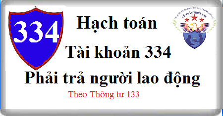

Hướng dẫn cách hạch toán Tài khoản 334 theo Thông tư 133, cách hạch toán tiền lương, tiền thưởng, phụ cấp, tạm ứng lương, bảo hiểm xã hội (ốm đau, thai sản, tai nạn..), các khoản khác như: Tiền ăn ca, tiền nhà, tiền điện thoại, học phí, thẻ hội viên...:
1. Nguyên tắc kế toán Tài khoản 334 - Phải trả người lao động
- Tài khoản này dùng để phản ánh các khoản phải trả và tình hình thanh toán các khoản phải trả cho người lao động của doanh nghiệp về tiền lương, tiền công, tiền thưởng, bảo hiểm xã hội và các khoản phải trả khác thuộc về thu nhập của người lao động.
2. Kết cấu và nội dung Tài khoản 334 - Phải trả người lao động
Bên Nợ:
- Các khoản tiền lương, tiền công, tiền thưởng có tính chất lương, bảo hiểm xã hội và các khoản khác đã trả, đã chi, đã ứng trước cho người lao động;
- Các khoản khấu trừ vào tiền lương, tiền công của người lao động.
Bên Có: Các khoản tiền lương, tiền công, tiền thưởng có tính chất lương, bảo hiểm xã hội và các khoản khác phải trả, phải chi cho người lao động;
Số dư bên Có: Các khoản tiền lương, tiền công, tiền thưởng có tính chất lương và các khoản khác còn phải trả cho người lao động.
- Tài khoản 334 có thể có số dư bên Nợ. Số dư bên Nợ tài khoản 334 (nếu có) phản ánh số tiền đã trả lớn hơn số phải trả về tiền lương, tiền công, tiền thưởng và các khoản khác cho người lao động.
3. Cách hạch toán khoản phải trả người lao động Tài khoản 334:
a) Tính tiền lương, các khoản phụ cấp theo quy định phải trả cho người lao động, ghi:
Nợ TK154 Chi phí sản xuất kinh dở dang, hoặc
Nợ TK 241 Xây dựng cơ bản dở dang, hoặc:
Nợ TK 631 hoặc
Nợ TK TK 642 - Chi phí quản lý kinh doanh
Có TK 334 - Phải trả người lao động.
Xem thêm: Cách làm bảng tính lương trên Excel
b) Tiền thưởng trả cho công nhân viên:
- Khi xác định số tiền thưởng phải trả cho người lao động từ quỹ khen thưởng, ghi:
Nợ TK 353 Quỹ khen thưởng, phúc lợi (3531)
Có TK 334 - Phải trả người lao động
- Khi xuất quỹ chi trả tiền thưởng, ghi:
Nợ TK 334 - Phải trả người lao động
Có các Tài khoản 111, 112,...
c) Tính tiền bảo hiểm xã hội (ốm đau, thai sản, tai nạn,...) phải trả cho công nhân viên, ghi:
Nợ TK 338 Phải trả phải nộp khác (3383)
Có TK 334 - Phải trả người lao động
d) Tính tiền lương nghỉ phép thực tế phải trả cho công nhân viên, ghi:
Nợ các TK 154, 642
Nợ TK 335 Chi phí phải trả (nếu có trích trước tiền lương nghỉ phép)
Có TK 334 - Phải trả người lao động
đ) Các khoản phải khấu trừ vào lương và thu nhập của công nhân viên và người lao động khác của doanh nghiệp như tiền tạm ứng chưa chi hết, bảo hiểm y tế, bảo hiểm xã hội, bảo hiểm thất nghiệp, tiền thu bồi thường về tài sản thiếu theo quyết định xử lý.... ghi:
Nợ TK 334 - Phải trả người lao động
Có TK 141 Tạm ứng
Có TK 338 Phải trả, phải nộp khác
Có TK 138 Phải thu khác.
e) Tính tiền thuế thu nhập cá nhân của công nhân viên và người lao động khác của doanh nghiệp phải nộp Nhà nước, ghi:
Nợ TK 334 - Phải trả người lao động
Có TK 333 - Thuế và các khoản phải nộp Nhà nước (3335).
Xem thêm: Cách tính thuế Thu nhập cá nhân
g) Khi ứng trước hoặc thực trả tiền lương, tiền công cho công nhân viên và người lao động khác của doanh nghiệp, ghi:
Nợ TK 334 - Phải trả người lao động
Có các TK 111, 112,...
h) Thanh toán các khoản phải trả cho công nhân viên và người lao động khác của doanh nghiệp, ghi:
Nợ TK 334 - Phải trả người lao động
Có Tài khoản 3335 Thuế TNCN (nếu có)
Có các TK 111, 112,...
Xem thêm: Mẫu bảng thanh toán tiền lương
i) Trường hợp trả lương hoặc thưởng cho công nhân viên và người lao động khác của doanh nghiệp bằng sản phẩm, hàng hoá, kế toán phản ánh doanh thu bán hàng không bao gồm thuế GTGT, ghi:
Nợ TK 334 - Phải trả người lao động
Có TK 511 - Doanh thu bán hàng và cung cấp dịch vụ
Có TK 3331 - Thuế GTGT phải nộp (33311).
k) Xác định và thanh toán các khoản khác phải trả cho công nhân viên và người lao động khác của doanh nghiệp như tiền ăn ca, tiền nhà, tiền điện thoại, học phí, thẻ hội viên...:
- Khi xác định được số phải trả cho công nhân viên và người lao động của doanh nghiệp, ghi:
Nợ các TK 154 (631), 642, 241 ...
Có TK 334 - Phải trả người lao động
- Khi chi trả tiền lương và các khoản khác cho công nhân viên và người lao động khác của doanh nghiệp, ghi:
Nợ TK 334 - Phải trả người lao động
Có các TK 111, 112,...
--------------------------------
Kế toán Diệu Tâm xin chúc bạn thành công! Các bạn muốn học thực hành kê khai thuế, tính thuế - Quyết toán thuế trên phần mềm HTKK, cách hạch toán, hoàn thiện sổ sách – Lập báo cáo tài chính thực tế, chuyến sâu… Có thể tham gia: Lớp học thực hành kế toán
Kế toán Diệu Tâm xin chúc bạn thành công! Các bạn muốn học thực hành kê khai thuế, tính thuế - Quyết toán thuế trên phần mềm HTKK, cách hạch toán, hoàn thiện sổ sách – Lập báo cáo tài chính thực tế, chuyến sâu… Có thể tham gia: Lớp học thực hành kế toán
